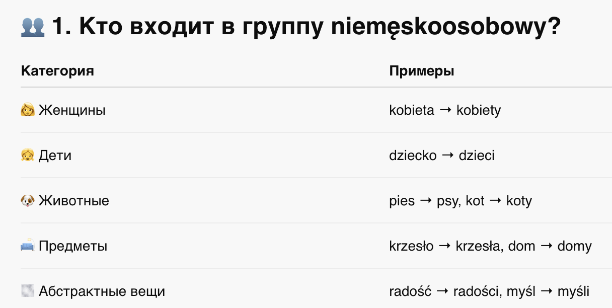
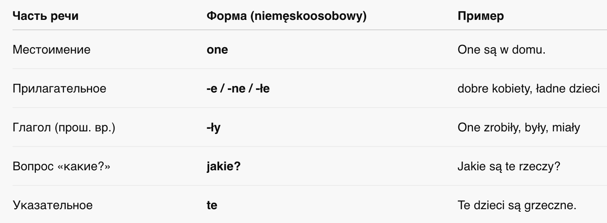
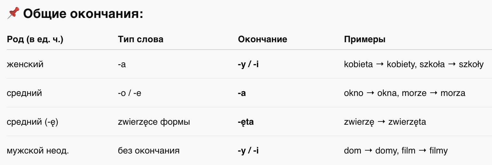
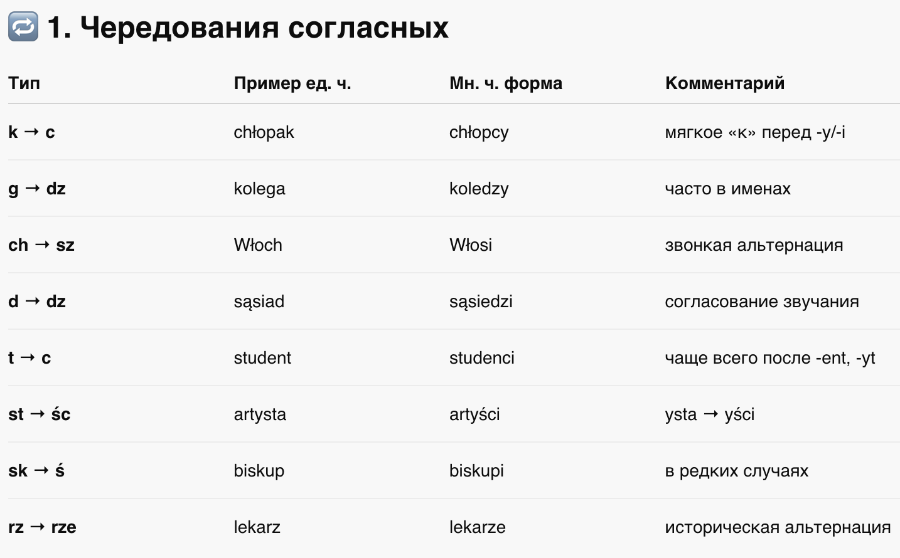
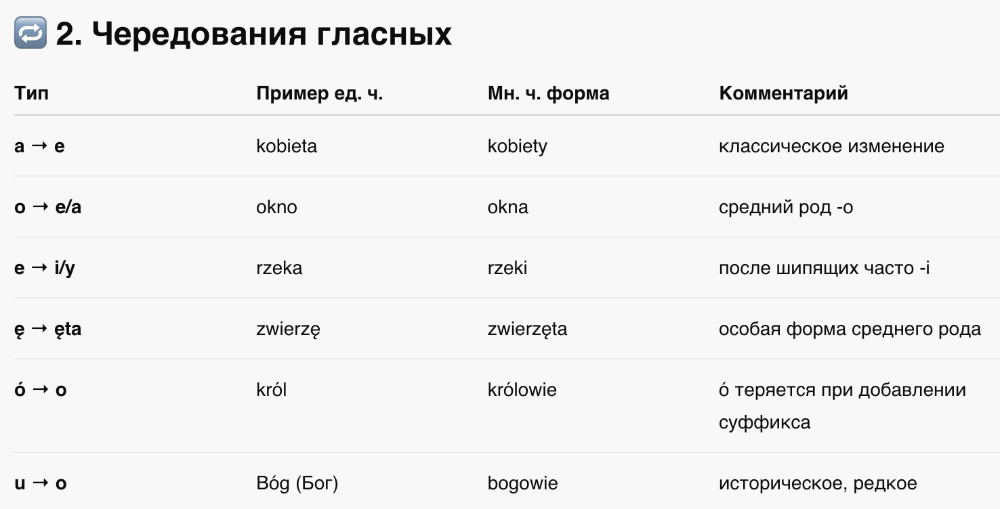
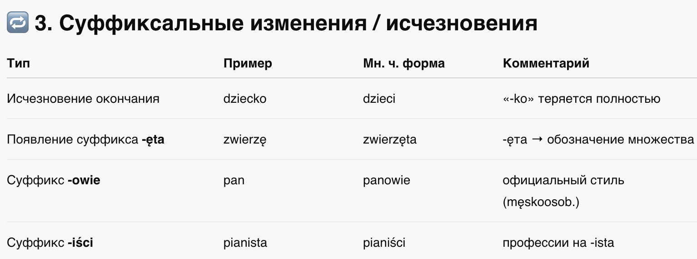
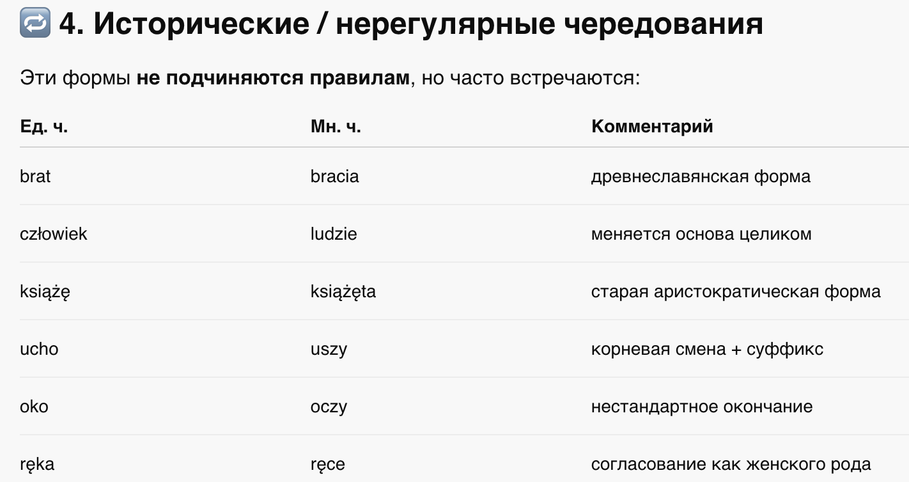
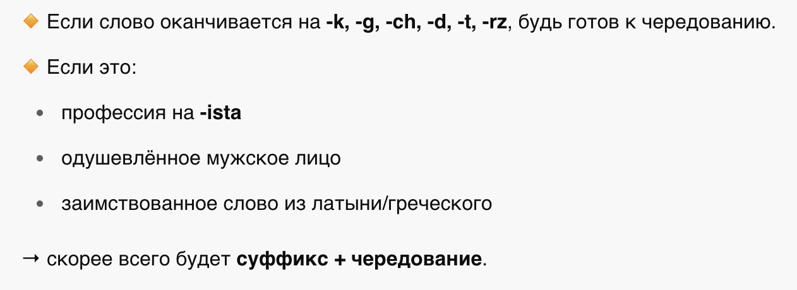

📘 Глава 6: Существительные немужского рода во множественном числе
🧑🎓 Rzeczowniki niemęskoosobowe w liczbie mnogiej
1. Что такое rodzaj niemęskoosobowy?
2. Особенности согласования
3. Образование формы множественного числа
4. Чередования (Alternacje)
5. Советы по запоминанию
📍 Что такое rodzaj niemęskoosobowy?
Во множественном числе к этому роду относятся все существительные, которые НЕ обозначают:
- мужчин
- групп с мужчинами
То есть:
- ✅ Женщины
- ✅ Дети
- ✅ Животные
- ✅ Предметы
- ✅ Абстрактные понятия

🧠 2. Особенности согласования

✏️ 3. Образование формы множественного числа

🔁 4. Чередования (Alternacje)
Чередования делятся на:
- Согласные (alternacje spółgłoskowe)

- Гласные (alternacje samogłoskowe)

- Суффиксальные изменения (суффиксы / исчезновение / добавление)

- Исторические чередования (редкие, но встречаются в речи)

📌 Важно:
- Некоторые чередования можно вывести логически (например, k → c, g → dz), но многие — нужно запоминать.
- Суффиксы типа -ęta, -owie, -iści — идут вместе с чередованиями.
- Не все слова поддаются формуле — польский язык богат на исключения из-за своего исторического развития.
🧠 5. Советы по запоминанию
